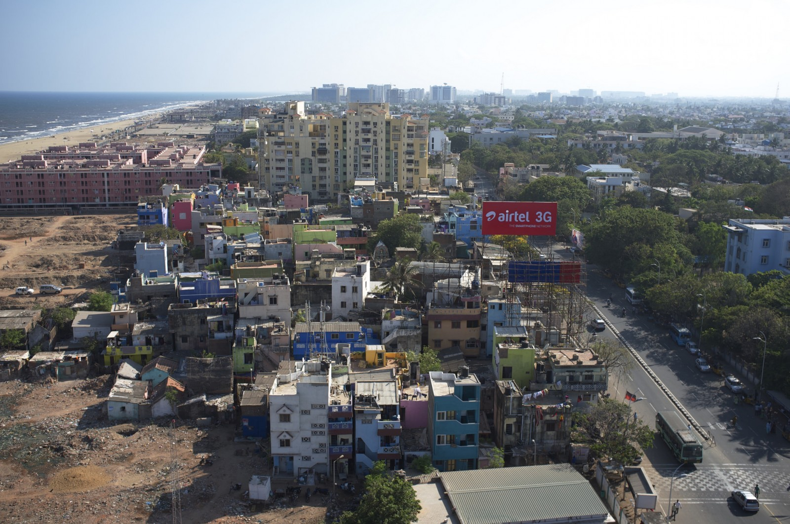
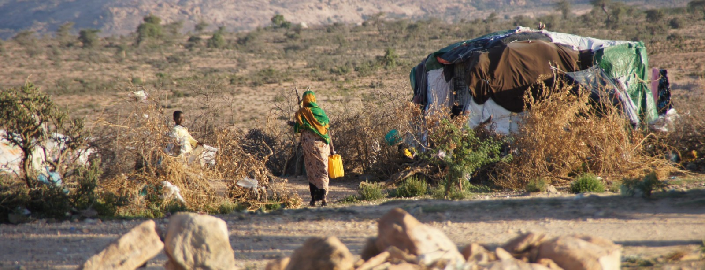
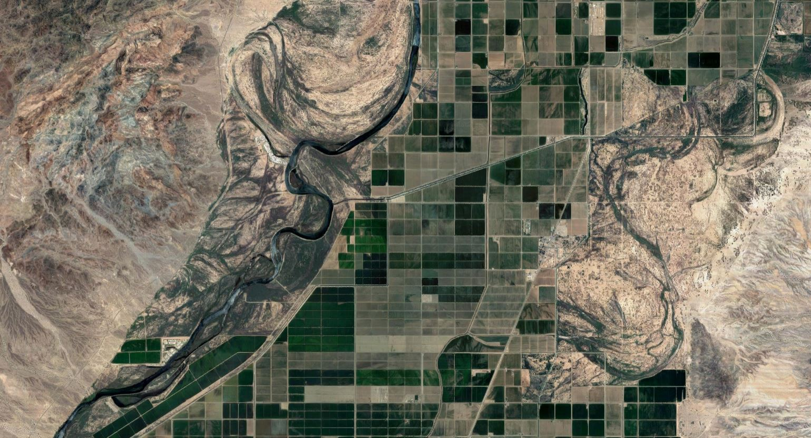
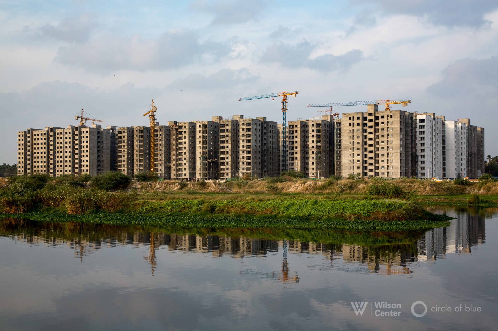
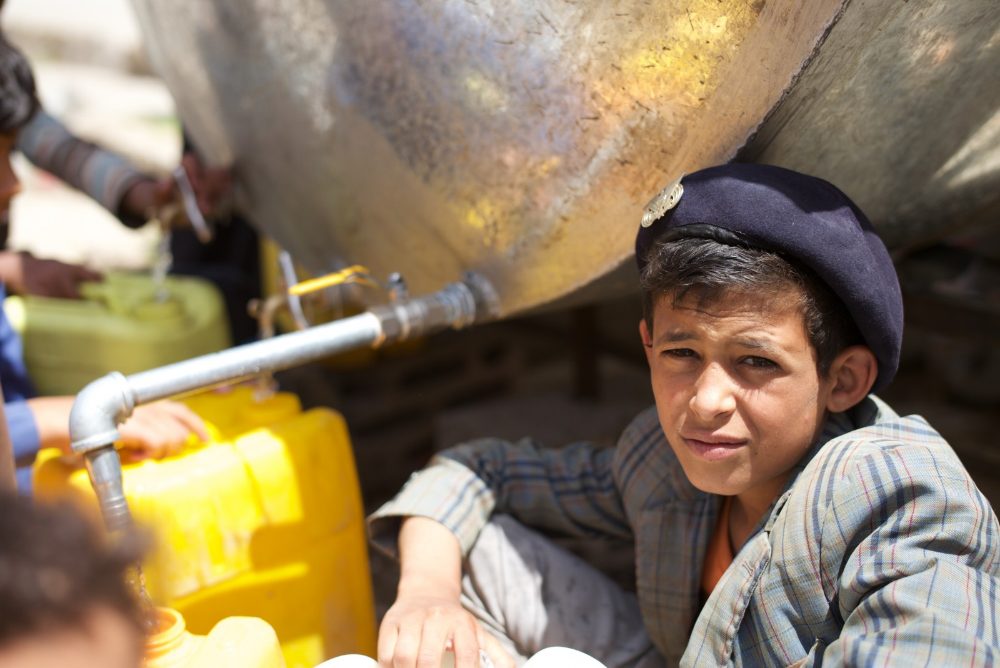

HotSpots H2O, November 12: Three-Day Tanker Strike Reveals Water Tensions in Chennai, India
Prompted by a court ruling restricting their access to groundwater, private water tankers in Chennai went on strike in October, a move that shut down hotels, IT firms, and other businesses and affected thousands of households that rely on water delivered by the trucks.
The strike ended after three days, when the government promised to 'look into [the] demands' of the private tankers.
A coastal city in southern India, Chennai and its more than 8 million residents face a water shortage.The metropolis, one of India’s largest and fastest-growing urban areas, requires an estimated 800 million liters of water a day.Currently, the government can provide only 675 million liters.
Private water tankers have emerged to fill the gap.Thousands of privately owned tankers draw water from rural areas and bring it to Chennai, where it is resold for up to 50 times its cost.The water, however, is often gathered without proper permits.In 2014, the state government ruled that private tanker firms must obtain a commercial license before extracting groundwater for resale.
Enforcement of the restriction has been inconsistent, though, and many private tankers see it as hindrance to providing a crucial service.Earlier this year, 75 drinking water bottlers petitioned the state government to reconsider the 2014 restrictions.In October, the Madras High Court reaffirmed the restrictions, citing concerns about rural water supply and corruption among private tankers.
'The government should either allow them to extract water or take the full responsibility of providing water.'–S. Geetha, a resident of Perungudi, a Chennai neighborhood.Residents who rely on private tankers scrambled to gather water in buckets and other containers prior to the strike.Some families temporarily stayed with friends and relatives in parts of the city where the municipal government delivers water.
8.5 million Population of Chennai.An additional 2 million people live in Chennai’s metropolitan region.In the past two decades, the city has grown by an average of 265,000 residents per year.
200 million liters Water delivered by Chennai’s private tankers each day.
4,000+ Water tankers involved in the October strike, which involved an estimated 300,000 workers.
25 percent Growth in Chennai’s private tanker industry since 2014, despite more severe groundwater restrictions.
For now, Chennai’s water service has returned to normal.The future is uncertain, though, especially as the city grows and groundwater reserves shrink.Chennai is considering new water sources, including a desalination plant.The plant, which will likely be constructed in the next five years, would provide 150 million liters of water per day.
In City Prone to Drought, Chennai’s Water Packagers Rush InRampage of Water and Social Entrepreneurs Push Chennai to Consider New Growth Strategy
As groundwater runs short, water battles grow in parched Chennai
(Thomas Reuters Foundation) Chennai faces drinking water crisis as packaged water units join tanker strike
(The New Indian Express) Chennai water tanker strike ends, for now
(The Hindu) OMR residents stock up on water as tanker strike looms
(The Times of India) Tankers’ strike: IT firms to face severe water crisis
(The Times of India)
Posted On: 2018-11-12T00:00:00
Posted By: Kayla Ritter





Content Date: 2018-11-12
Download Date: 2021-05-12
Document ID: L0C04B2QS